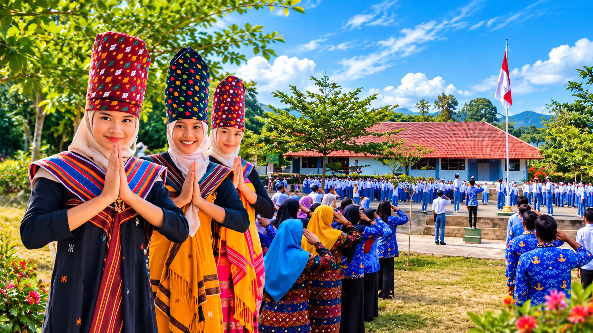

Selamat Datang di SMAN 2 Bayan
Kegiatan Belajar Mengajar & Digitalisasi Sekolah
Dokumentasi kegiatan pembelajaran harian yang diunggah Bapak/Ibu Guru akan tampil otomatis di layar ini selama 24 jam.
Jl. Raya Bayan - Ancak, Karang Bajo
Rekap Kehadiran Siswa Per Kelas Hari Ini
Guru Hadir: 0
Total Siswa Hadir: 0